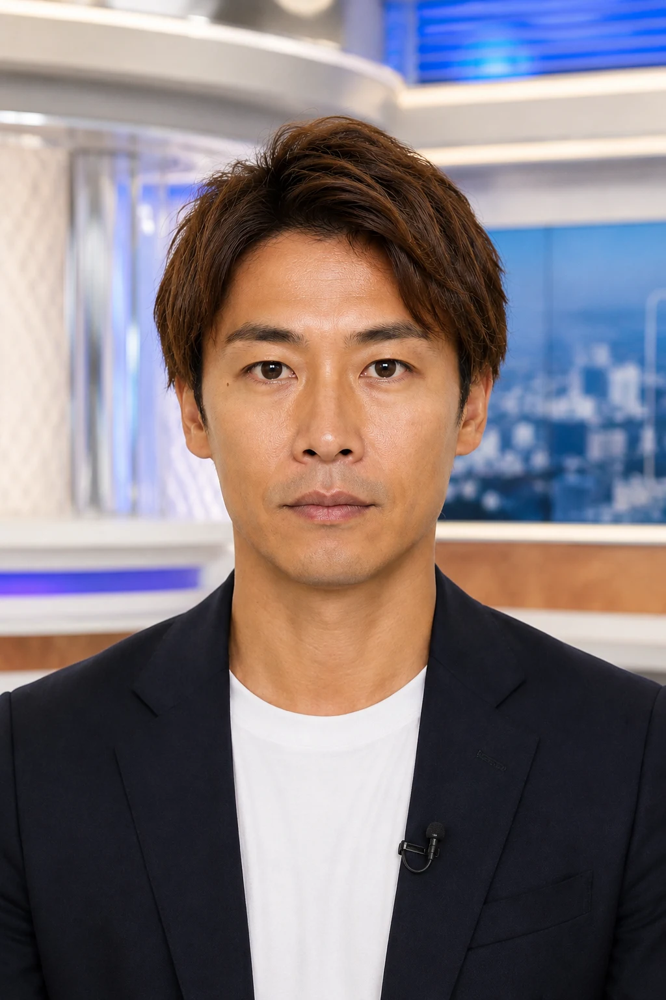

運用の知見
刺さる企画
商材LPと顧客の悩みを整理。「自分のことだ」と感じる言葉を、キャッチと冒頭シーンへ。
広告主・広告代理店の方へ
顧客の悩みに刺さる企画を、人が伝える動画に。
広告運用会社が、企画・撮影・編集まで引き受けます。
4つの質問から、制作内容・費用・納期のご相談へ
98,000円（税別）
制作するのは、すぐ広告に使える完成動画。
企画・台本から、演者の撮影・編集、修正2回まで。
税込107,800円
01 / YOUR CHALLENGE
02 / KEEP CREATING
次の当たりを探すには、
複数の切り口を出し続ける。
本編を活かし、冒頭の切り口を増やす。量産の起点を、11本・4本のセットにまとめました。
本編の追加や継続制作は、必要な本数・ペースに合わせてお見積りします。
制作セットを見る ↓03 / WHY ARRANGE PIECE
最初に決めるのは、「誰の、どんな悩みに応えるか」。
その答えを、冒頭の言葉とシーン、本編の説明へ落とし込みます。
運用の知見
商材LPと顧客の悩みを整理。「自分のことだ」と感じる言葉を、キャッチと冒頭シーンへ。
言葉・表情・間
興味を惹いたあとに、サービスの価値を説明。演者の言葉と表情で、理解と納得につなげます。
AIも制作を補助
本編を活かし、冒頭の言葉と映像を変えた完成動画へ。必要な本数を、短期間で揃えます。
冒頭で惹きつける。
本編で、伝える。
04 / WATCH THE DIFFERENCE
着物買取の制作事例。ニュース、インタビュー、家族の会話。
興味を惹く言葉とシーンを、実際の冒頭5秒で見比べてください。
「うちの着物にも、価値があるかも」
冒頭5秒・音声あり
「日本の着物、いま大人気です」
表現：海外インタビュー風
「中古の着物が、海外で高く？」
冒頭5秒・音声あり
「今、中古の着物が、海外で高い値段で…」
表現：ニュース風
「この着物、どうしよう」
冒頭5秒・音声あり
「おばあちゃん、この着物どうするの？」
表現：家族の会話
演者の語りに、テロップと挿入映像を組み合わせた制作例です。
掲載動画は過去の制作事例です。冒頭以外のテロップ・挿入映像等にも変更が含まれます。下記の獲得実績と同一の配信素材を示すものではありません。動画内の商品・サービス条件は現在の案内ではありません。
05 / PERFORMANCE
広告運用の現場で、CV・CPAに向き合ってきました。
4か月累計
1,470CV
4か月にわたり、継続して獲得。
動画1本で
383CV
1本のクリエイティブによる獲得。
CASE 03
動画1本を4か月継続配信
LINE登録882件
出典：当社提供資料に掲載する過去の配信実績。CPAは広告費÷CV数で、動画制作費は含みません。事例ごとに商材・配信条件・集計単位が異なります。成果には広告運用・LP等も影響し、将来の成果や制作動画単独の改善効果を保証するものではありません。
06 / PRODUCTION PLAN
広告運用会社が、企画・台本から演者の撮影・編集まで担当します。
 ▶
▶ ▶
▶ ▶▶▶▶▶▶▶▶
▶▶▶▶▶▶▶▶動画広告制作
複数の切り口を、まとめて揃えたい。
企画・撮影・編集・修正2回まで込み
税込107,800円
動画広告制作
まずは絞った切り口で、制作したい。
企画・撮影・編集・修正2回まで込み
税込54,780円
修正2回 ＋ 初回の広告審査対応付き
通常修正2回とは別枠で、本編1本の再撮影1回と、対象動画の再書き出しまで制作料金に含みます。
初回納品から30日以内に否認通知をご共有いただいた初回の差し戻しが対象。当初合意した商材・配信媒体・企画の範囲で対応します。当社の誤字・制作ミスはこの枠を消費せず訂正します。審査通過を保証するものではありません。
男性演者での制作／台本確定後
通常は30代〜50代前半の男性演者で制作。確認・修正内容、出演条件、制作状況により変動します。
CONTINUOUS PRODUCTION
案件数・本編数・冒頭の展開数・制作ペースを整理し、必要な制作量に合わせてお見積りします。
PRODUCTION DETAILS
1案件・1商材・1本編。尺・素材などの制作条件は、お見積り時にすり合わせます。広告運用・入稿・広告費は別途です。
07 / HOW IT WORKS
誰に、何を伝える？
冒頭の言葉とシーン
価値を伝える本編

▶人が、伝える。010203異なる入口から、
同じ価値を伝える。
制作工程のイメージ
制作範囲と見積りを確認し、全額前払いでご発注。台本がなくてもご相談いただけます。
企画・台本をご確認いただき、確定後に撮影・編集。初稿は台本確定後2営業日で提出します。
通常修正2回まで対応。縦型の完成MP4またはMOVで納品します。
1案件・1商材・1本編。広告運用・入稿・広告費・追加制作は別途です。
08 / QUESTIONS
ご依頼いただけます。掲載プランは動画制作・納品の費用です。広告運用は自社・現在の代理店のまま、制作だけをお任せいただけます。広告運用・入稿・広告費は含みません。
企画・台本から当社の演者による撮影・編集まで対応します。基本は30代〜50代前半の男性演者で、外見・服装などの調整もご相談いただけます。女性演者はモデル手配が必要なため、納期を別途ご案内します。商材LPや使用できる商品画像などがあればご共有ください。
本編単体1本と、10種類の冒頭をそれぞれ共通本編につないだ完成動画10本の、合計11本です。4本セットは本編単体1本＋冒頭違い付き3本です。どちらも1案件・1商材・1本編で、別企画の本編を追加する場合は別途お見積りします。
通常の男性演者による制作では、台本確定後2営業日で初稿を提出し、最短3営業日〜で納品します。確認・修正内容、出演条件、制作状況などにより変動します。女性演者をご希望の場合は、モデル手配を含めたスケジュールを別途ご案内します。
制作料金に修正2回までを含みます。当社の誤字・制作ミスは、この回数とは別に訂正します。別企画や追加撮影などは別途お見積りします。変更内容に応じた対応範囲・費用は事前にすり合わせます。
初回納品から30日以内に否認通知をご共有いただいた初回の審査差し戻しには、当初合意した商材・配信媒体・企画の範囲で、本編1本の再撮影1回と対象動画の再書き出しまで制作料金に含めて対応します。通常修正2回とは別枠で、当社の誤字・制作ミスはこの枠を消費しません。
否認理由を確認し、必要な対応を整理します。LP・広告アカウント・配信条件など動画以外が原因の場合は、原因に応じて対応をご相談します。審査通過を保証するものではありません。別企画への変更や追加の再撮影などは、原因と工数を確認して事前にお見積りします。
広告出稿には、期間の制限なくご利用いただけます。自社SNS・LP等への二次利用は事前にご相談ください。納品は完成MP4またはMOVで、編集元データの提供は含みません。
制作費は全額前払いです。正式なお見積りと制作条件をご確認のうえ、お支払いいただきます。
クライアント向けの再販に対応します。当社名を動画に表示しない完成動画で納品する形にも対応します。クライアントへのお渡し方など、ご希望をお知らせください。
ご相談いただけます。案件数・必要な本編数・冒頭違いの数・ご希望の制作ペースを確認し、対応本数と費用をお見積りします。
4つの質問で希望を整理したあと、ご連絡先・相談内容を入力いただきます。商材・課題・希望本数・時期をもとに制作範囲・費用・スケジュールをご案内します。内容をすり合わせ、ご発注・お支払い後に制作を進めます。
09 / LET’S CREATE
商材LPと現在の課題を、担当者が確認。
制作内容・費用・納期を個別にご案内します。
台本や本数が未定でも、ご相談いただけます。
動画広告の制作を相談する→4つの質問 → 連絡先入力 → 担当者が確認